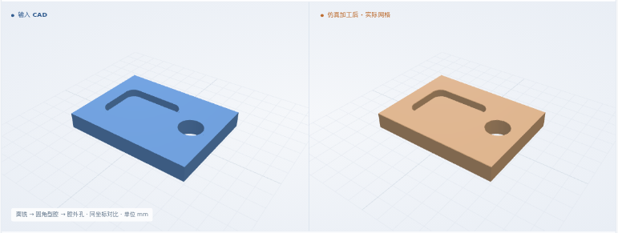
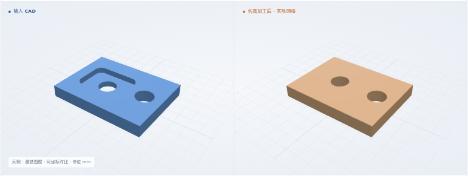
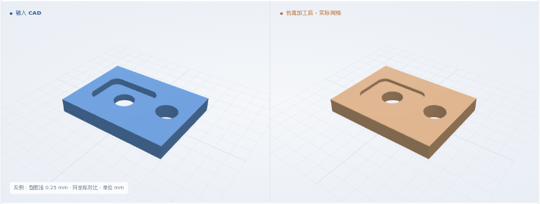
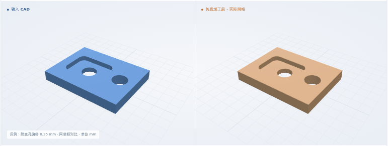

面铣 → 圆角型腔 → 腔外孔
来料厚 1.5 → 成品厚 1 mm · 目标顶面 Z-0.5 · P1 → K1 → H1
最终网格 0.025 mm
体积 IoU99.9040%

本次新增：型腔与孔连续加工 · 腔底孔按剩余底板检验 · 保留卡片顺序与换刀
体积 IoU = 原 CAD 与实际剩料的交集 / 并集
来料厚 1.5 → 成品厚 1 mm · 目标顶面 Z-0.5 · P1 → K1 → H1
最终网格 0.025 mm

来料厚 1.5 → 成品厚 1 mm · 目标顶面 Z-0.5 · P1 → K1 → H1 → H2
最终网格 0.025 mm
来料厚 1.5 → 成品厚 1 mm · 目标顶面 Z-0.5 · P1 → K1 → H1 → H2
最终网格 0.025 mm
来料厚 1.5 → 成品厚 1 mm · 目标顶面 Z-0.5 · P1 → H1 → H2 → K1
最终网格 0.025 mm
8 × 6 × 1.5 mm 合成来料 · 圆角型腔 4 × 3 × 0.5 mm · φ1.5 孔。通用 XYZ、6061-T6 标签；夹具、材料物理和真实整卡仍未验证。
完整毛坯 → 面铣 → 型腔 / 孔（按所选卡片顺序）→ 最终比对
三维回放暂不可用；上方实际图片和形状下载仍可查看。
T1 φ1 面铣与清腔 → T2 φ0.5 加工腔底孔 H1、腔外孔 H2
核对卡片顺序、依赖、刀具与 CAD。孔须完全位于腔底或腔外；与型腔壁相交时停止。
准备检查通过 ↗重读原 CAD；检查各层覆盖、孔位、切深、换刀与顺序。累计 NC 前缀必须与完整程序一致。
NC 与工艺卡一致 ↗检查顶面、型腔轮廓与底面；腔底孔按剩余底板检查孔壁，贯穿检查覆盖整个原始毛坯高度。
实际去料与几何检查 ↗| 工步结束时 | 体积 IoU | 形状与验收 |
|---|---|---|
| P1 完成 | 99.9697% | 预期 CAD · 实际 STL 4 项通过 ↗ |
| K1 完成 | 99.9502% | 预期 CAD · 实际 STL 7 项通过 ↗ |
| H1 完成 | 99.9197% | 预期 CAD · 实际 STL 10 项通过 ↗ |
| H2 完成 · 最终 | 99.8532% | 输入 CAD · 实际 STL 13 项通过 ↗ |
最终与每个工步边界均为 0.025 mm。软件尺寸允许量 0.1 mm，保护带 0.05 mm；11 个截面、各 25 个保留顶面 / 底面点、每孔 9 条贯穿线。输入 CAD 和各工步预期形状先于 NC 存档；仿真始终从完整原始毛坯执行，不替换剩料。
软件条件 ↗ · 完整结果 ↗制造验收依据仍待补齐；粗糙度、真实装夹和材料物理尚未验证。
全部先被正常 NC 入口拒绝，再由专用测试入口执行实际去料。错顺序例的最终几何仍能通过，但不符合工艺卡；其余四例检出对应几何问题。
基于“腔底孔与腔外孔组合”原卡 · 几何与工序均检出异常
最终网格 0.025 mm

基于“腔底孔与腔外孔组合”原卡 · 几何与工序均检出异常
最终网格 0.025 mm

基于“腔底孔与腔外孔组合”原卡 · 几何与工序均检出异常
最终网格 0.025 mm

基于“腔底孔与腔外孔组合”原卡 · 几何与工序均检出异常
最终网格 0.025 mm
基于“腔底孔与腔外孔组合”原卡 · 几何通过，工序拒绝
最终网格 0.025 mm
S4 尚未全部完成；后续范围统一列在 S4 总览。